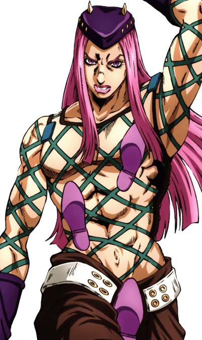

Introduction
Sixth part of JoJo's Bizarre Adventure started in the Weekly Shonen Jump from December 7, 1999 to April 8, 2003. This part recieved an adaption 2021!
Jolyne Cujoh
Is a resilient, independent, and determined indvividual with a strong sense of justice, quick-thinking nature, and a protective loyalty towards her friends and family!
Plot
Set in the year 2011, Florida, Jolyne Cujoh will be the next Joestar in this story! Daughter of Jotaro Kujo. She is wrongfully accused of a crime she didn't commit and is being sentenced to a maximum-security prison. She strives to prove her innocence but this was all planned. Every single detail of her imprisonment was planned by an enemy for a secret plot.
You will see many familiar faces...Faces from the past...A goal that goes back years that was lost in time until now!
Major Characters
Jolyne Cujoh

Ermes Costello
Emporio Alnino
Weather Report
Narciso Anasui
Jotaro Kujo

The villian would spoil too much to show here...
References
Weekly Shonen Jump 1999 Issue #1 December 7, 1999
Vogue Italia May 1998 M: Heather Stohler Ph: Steven Meisel
Jump Comics SO Volume 3 (Cover) October 4, 2000
Dior Spring 2000 M: Gisele Bundchen & Rhea Durham Ph: Nick Knight
I wouldn't spoil the villian or the stands in this series.